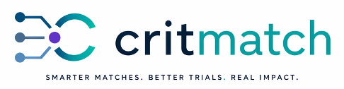

Enrollment Delays
Up to 80% of trials face enrollment delays, causing costly timeline risk for research teams and sponsors.

CritMatch ResearchHealthcare research technology
CritMatch helps health systems, researchers, and sponsors instantly identify eligible patients for clinical trials and research studies using real-time EHR data.
Problem
Up to 80% of trials face enrollment delays, causing costly timeline risk for research teams and sponsors.
Manual chart review consumes valuable staff time that should be focused on patient engagement and study execution.
Eligible participants are often missed when cohort identification is disconnected from day-to-day EHR workflows.
Product
How It Works
About Elionyx Health
Elionyx Health is the parent company behind CritMatch and RealDiag. We build AI-enabled healthcare infrastructure that improves diagnostic accuracy and research performance.
Why CritMatch Wins
Compared with TriNetX, Deep 6 AI, Epic SlicerDicer, and Oracle Health tools, CritMatch is differentiated by EHR-embedded workflow, flexible cohort logic, transparent criteria building, and faster deployment.
Contact
We work with health systems, academic medical centers, and pharma sponsors. Reach our team at contact@elionyxhealth.com.